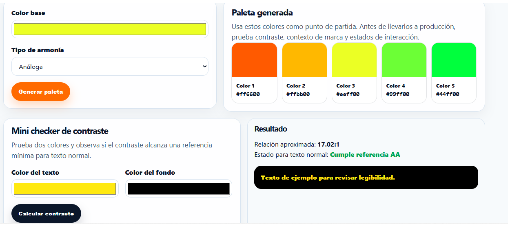

en una pagina de animales el color verde representa la naturaleza y la vida silvestre, evocando un sentido de frescura y vitalidad. Este color se asocia con la vegetación, los bosques y los hábitats naturales donde viven muchos animales. Además, el verde transmite calma y equilibrio, lo que puede ayudar a crear una experiencia visual agradable para los visitantes de la galería.
El color amarillo en una página de animales puede simbolizar la energía, la alegría y la vitalidad de la vida silvestre. Este color vibrante puede atraer la atención de los visitantes y resaltar aspectos importantes de la galería, como la diversidad de especies y sus comportamientos únicos. Además, el amarillo puede evocar imágenes de luz solar y paisajes naturales, reforzando la conexión con el entorno natural de los animales.
El color negro en una página de animales puede simbolizar la misteriosidad y la fuerza de los animales. Este color oscuro puede evocar imágenes de selvas densas y hábitats exóticos, resaltando la intensidad y el poder de los animales que viven en estos entornos.
